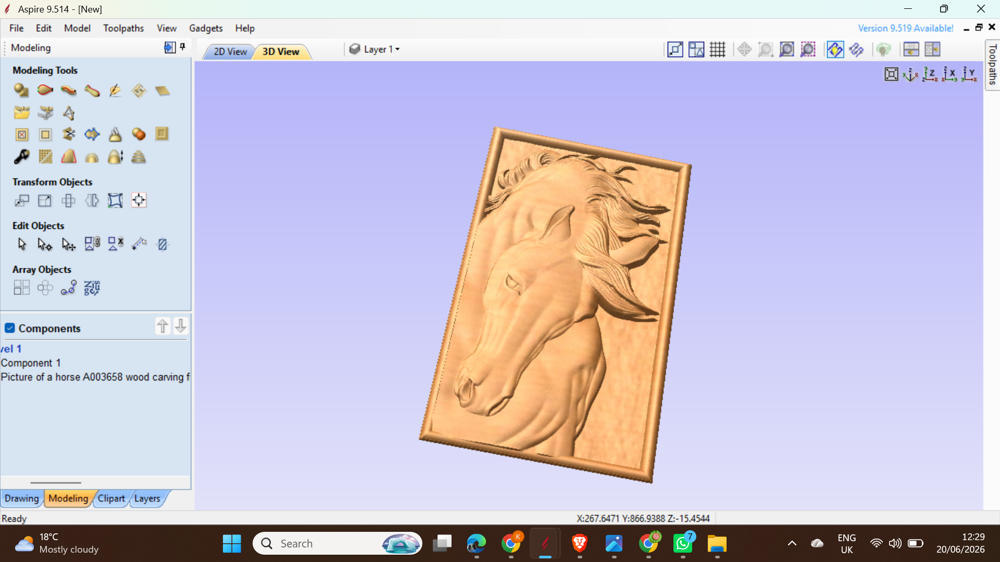

Vectric Aspire Project
Created a detailed 3D wood carving of a horse head with flowing mane using Vectric Aspire. The design focuses on realistic depth, smooth curves, and clean toolpaths for high-quality CNC relief machining.
Vectric Aspire 9.514